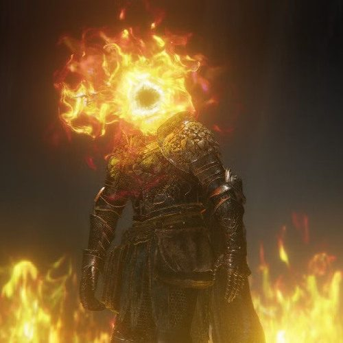

Black Flame Apostasy
Godskin Twin Rite
Complete level 1-20 JJK 5e homebrew guide for Black Flame Apostasy, inspired by Godskin Apostle & Godskin Noble.

Black Flame Apostasy
Godskin Twin Rite
Alternate between elastic Apostle reach and crushing Noble mass while god-slaying black flame eats a percentage of whatever survives the hit.
What the technique actually does.
Rules are written to plug into the finalized campaign glossary: normal actions stay normal, direct attacks roll, and only named Domain events bypass the initial roll.
Godskin Stance
The stance: bonus action, 1 CE, choose Apostle or Noble for 1 minute. Apostle: +10 speed, +5-foot reach on melee attacks, Dex-based mobility. Noble: +1 AC, advantage on checks/saves against forced movement, counts one size larger for grapples.Choose Apostle or Noble for 1 minute. Apostle grants +10 speed, +5-foot reach on melee attacks, and Dex-based mobility. Noble grants +1 AC, advantage on checks/saves against forced movement, and counts one size larger for grapples.
Kindling
On hit, no action, 1 CE: after a direct weapon or CE attack hits, leave the target Kindled until the start of its next turn. A Kindled creature cannot regain HP, and at the start of its turn, if still Kindled, it takes necrotic damage equal to 2% of its maximum HP (minimum PB, maximum 5 × his level). A creature suffers this delayed burn once per round.After a direct weapon or CE attack hits, spend 1 CE to leave the target Kindled until the start of its next turn. A Kindled creature cannot regain HP, and at the start of its turn, if it is still Kindled, it takes necrotic damage equal to 2% of its maximum HP (minimum PB, maximum 5 × your level). A creature can suffer this delayed burn once per round.
Godskin Armament
As part of entering stance, form a Twinblade in Apostle stance or Stitcher in Noble stance. Use any proficient equivalent weapon profile; the armament counts as cursed.As part of entering stance, form a Twinblade in Apostle stance or Stitcher in Noble stance. Use any proficient equivalent weapon profile; the armament counts as cursed.
Field notes. Subject: the apostate whose cursed energy once killed gods, heresy with an appetite. Three truths govern him. First, the god-skin burned is not fuel but memory: his CE reproduces the moment a mortal’s flame proved stronger than a god, and the percent-burn is the flame still convinced every body contains something divine worth eating. Second, the hunt wears two skins: Apostle’s elastic reach or Noble’s crushing mass, chosen stance by stance, and the two may one day stand side by side as the Twin Rite. Third, apostasy refuses death: the partner reforms at the chant, the flame is restored to its true black at the last milestone, and no Domain is granted, the rite itself is the pinnacle. Mark it: everything burns the same, and nothing divine is exempt.
Level 1 through 20.
Milestones use the campaign’s familiar 1 / 3 / 6 / 11 / 18 structure and add an explicit level-20 mastery feature.
1Vestments of the Godhunt
Godskin Stance
Bonus action · 1 CE · 1 minute · Choose Apostle (+10 speed, +5-ft melee reach, Dex mobility) or Noble (+1 AC, advantage vs forced movement, counts one size larger for grapples); on entering, form a Godskin Armament (Twinblade in Apostle, Stitcher in Noble; counts as cursed). On hit (no action, 1 CE): the target is Kindled until the start of its next turn — it cannot regain HP, and at the start of its turn takes necrotic damage equal to 2% of its max HP (minimum PB, maximum 5 × level), once per round.
Use any proficient equivalent weapon profile.
Swaddling Recovery
Trigger · Once per turn when your direct melee attack deals damage: gain temporary HP equal to PB (or heal 1 HP per PB if you already have temporary HP); you cannot be healed above half your maximum HP by this feature.
Scaling
Passive · Range 30 feet.
The flame’s reach at its shortest.
3Black Flame Scripture
Black Flame Orb
Action · 2 CE · Ranged CE attack, 90 ft; on a hit the target is Kindled.
Scouring Black Flame
Action · 3 CE · 30-ft cone: Dexterity saves; failure: Kindled and blinded until the start of your next turn; success: no effect.
Twin Detonation
Once per turn · No action · 1 CE · When you hit a Kindled creature while in the opposite stance from the one that Kindled it: consume the Kindling (delayed burn triggers immediately) and force a Strength save; failure knocks the target prone.
Ritual Circle
Action · 3 CE · Focus · Create a 15-ft-radius black-flame ring for 1 minute; the first time each turn a creature crosses its edge, it is Kindled.
Scaling
Passive · Range extends to 60 feet.
The scripture’s reach lengthens.
6Second Skin
Apostle Extension
Passive · Apostle melee reach becomes 15 ft; once per turn after a hit, move 10 ft without provoking from that target.
Noble Roll
Bonus action · 2 CE · Move up to your speed in a line through hostile spaces; each creature whose space you enter makes a Strength save; failure: knocked prone and dragged 10 ft along your path; success: no effect.
Stance Cancel
Trigger · Once per turn after resolving a stance-specific feature: switch stance without an action and without CE.
Scaling
Passive · Range extends to 90 feet.
The second skin’s reach lengthens.
11The Duo Rite
Skinbound Partner
Action · 8 CE · Focus · 1 minute · Manifest the opposite stance as a Medium shikigami-like partner (AC 14+PB, HP 8 × level, speed 40): it acts after you, moving plus making one Godskin Armament attack (applies Kindling for 0 CE on a hit); it cannot use your Domain/Maximum.
Shared Health Rite
Reaction · When your partner takes damage: take any amount of that damage instead. Passive: when you take damage, your partner may absorb up to 5 × PB of one damage instance per round.
Black Flame Tornado
Action · 7 CE · Creatures within 15 ft: Dexterity saves; failure: Kindled and pulled 10 ft toward you; success: no effect.
Scaling
Passive · Range extends to 120 feet.
The rite’s reach lengthens.
18Apostasy Refuses Death
Resurrection Chant
Trigger · If Skinbound Partner reaches 0 HP while you remain conscious: spend 5 CE at the end of each of two rounds to reform it at full HP; damage to you can interrupt this via Technique Focus checks.
Apostasy refuses death.Maximum: Godskin Sabbath
Action · 10 CE · You and your partner (or a phantom opposite form if absent) sweep a 60-ft path: creatures crossed make Dexterity saves; failure: knocked prone and Twin-Kindled (the delayed burn triggers twice at the start of their turn); success: Kindled only.
No Domain
Passive · This technique does not naturally form a Domain; its binding identity is two bodies sharing one rite.
Its binding identity is not an imposed barrier law.Its binding identity is not an imposed barrier law.
Scaling
Passive · Range extends to 180 feet.
The apostasy’s reach lengthens.
20Godhunt Restored
True Black Flame
Passive · The delayed Black Flame burn becomes 3% of maximum HP (minimum PB, maximum 10 × your level); it ignores fire resistance but not fire immunity; the necrotic portion remains.
Duo Without Focus
Passive · Skinbound Partner no longer requires Technique Focus, though only one partner may exist.
Gloam Hunt
Trigger · Once per turn: when both you and your partner hit the same creature before your next turn, the second hit consumes any Kindling for the immediate double-burn; the target cannot regain HP until the start of your next turn.
Scaling
Passive · Range extends to 300 feet.
The godhunt’s reach at its longest.
Domain, Maximum, or equivalent.
Not every technique needs a Domain. When one exists, its sure-hit is a unique autonomous initiative-count-20 event unless the Domain is explicitly rule-based.
No natural Domain The pinnacle without a barrier: Black Flame Apostasy reaches its pinnacle through the Twin Rite, resurrection, and restored god-hunting flame. A character may still learn generic barrier techniques or Simple Domain through class features, but the innate technique itself does not automatically grant a Domain.
Four build-defining options.
These broaden the law instead of merely inflating the same number.
Apostle’s Reach
In Apostle stance, his opportunity attacks may apply Kindling, paying its normal CE cost, the long limb punishes retreat with godfire.Shared Vestments
As a bonus action for 1 CE, extend his Godskin Stance to one willing creature within 15 feet until the start of his next turn. It gains the stance’s passive benefits, Apostle’s speed and reach, or Noble’s armor and stability, but not his armament, Black Flame, or stance actions.Swaddling Cloth
When he would gain temporary HP from Swaddling Recovery, he may instead grant those temporary HP to one willing creature within 15 feet, wrapping it in spectral swaddling cloth.Choir of Two
The partner gains proficiency in one skill he has; while within 30 feet, he may perceive through its senses without an action.Edge cases and shared systems.
These rulings are designed around the revised Player Guide rather than the raw PDF where the two differ.
Quick reference.
This is the technique-specific procedure to keep at the table.
| Stance | Body | Weapon | Signature |
|---|---|---|---|
| Apostle | Fast, elastic, long reach | Twinblade | Extension, spirals, pursuit |
| Noble | Heavy, stable, broad | Stitcher | Roll, guard, body checks |
What was adapted.
The mechanics above are JJK 5e homebrew; these references establish the source character’s demonstrated power identity.
- Eldenpedia, Godskin Duo
- Eldenpedia, Godskin Apostle
- Eldenpedia, Blackflame
- JJK rules inspiration: the user’s Project PDF, comprehensive Player Guide, early rule-Domain examples such as Idle Death Gamble / Deadly Sentencing / Siphon, and the revised initiative-20 Domain procedure.